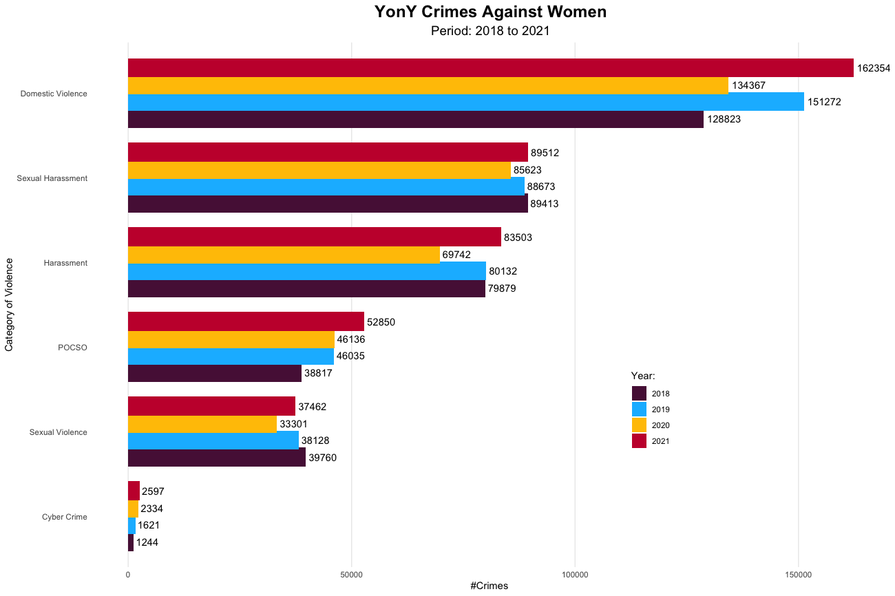
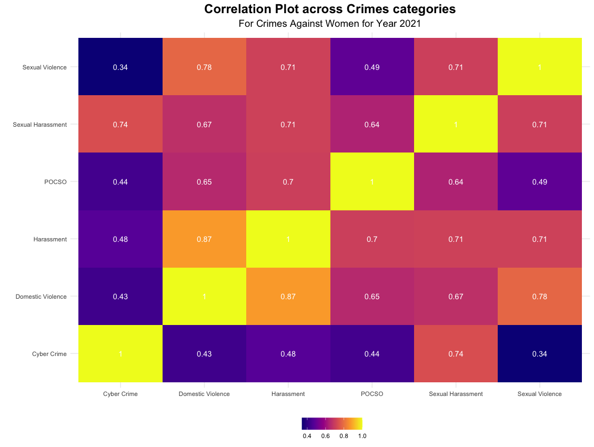

These days, every brat on YouTube speaks about their fundamental right to freedom of expression. However, I would love to keep Human Rights on a higher plane compared to Fundamental Rights as Violence against Women and Girls is one of the world’s most prevalent human rights violations and a global pandemic. Violence in any form creates physical, economic and psychological consequences not only for women but also for the entire society. For this reason, Ved Vyas himself penned Devi Bhagavata Purana to uphold the dignity of women in our society.
In the first place, let us explore the types of violence against women. As per my comprehension, I have categorized them into six categories: Domestic Violence, Sexual Harassment, Harassment, POCSO, Sexual Violence and Cyber Crime. The below graph depicts the trend of violence against women between 2019 and 2021 in India.

Types of Violence against women
Domestic Violence
According to United Nations, domestic Violence includes acts of physical violence such as slapping, chocking or burning, sexual violence including spousal rape, psychological violence such as fear by intimidation or forced isolation, and economic violence by maintaining total control over financial resources, withholding access to money or forbidding attendance to employment. In the Indian Context, there are four major crime headings under which we can register a case:
- Cruelty by husband or relatives
- Dowry Death
- Abetment of Suicide of Women
- PWDVA - Protection of Women from Domestic Violence Act
The total number of cases registered under domestic Violence in 2021 is 1,62,354, which translates to 11 domestic cases in one year for every 1 Lac (1,00,000) population (25,000 households). We can only infer on this metric if we have a comparison. Let’s do some fact check: the number of domestic cases registered for every 1 Lac (1,00,000) population in the USA and Norway is 300 and 106 respectively. Wow!!! India scored a bingo on this metric, and yet we have less women representation in the workforce. Where is the leak?
The leak is in reporting. People who understand the geo-socio-economical dynamics would love to argue that this is a gross under-reported number. Reporting of such crimes depends upon the community, and for various reasons, including lack of social support, shame, and stigma, women selectively report cases. Although systematic gaps exist in registering the cases, most of us are merely mute spectators. Adding to this, domestic Violence is one of the most common forms of Violence experienced by women globally. As per the NFHS report, on average, Indian women are 17 times more likely to face sexual Violence from their husbands than others and we see almost negligble cases under this crime. So, under this context, have we normalized domestic Violence as a society?
Sexual Harassment and Harassment
Sexual Harassment and Harassment include verbal, non-verbal, or physical conduct, as well as written and electronic communications. It includes acts of verbal threat, acid attack, kidnap/abduction, abuse, unwanted touching, rubbing/brushing, repeatedly asking for dates/sex, comments on appearance, bodyparts, clothing and others. Coming to the Indian Context, the following are the major crime headings we can register a case:
- Acid attack
- Attempt to acid attack
- Kidnapping and abduction of women
- Insult to the modesty of women
- Assault on women with intent to outrage her modesty
- Indecent representation of women
The total number of cases registered under this category in 2021 is 1,73,015, which translates to 12 cases in one year for every 1 Lac (1,00,000) population (25,000 households). The USA and Norway have similar numbers of around 11 cases per year for every 1 Lac population. It is obvious from the crime descriptions that these cases are copious enough to be registered, and they do not come up with any stigma attached, so the cases registered are on par with those of developed economies.
POCSO
POCSO is referred to as Protection of children from sexual offences. Often, these include acts of sexual assault, harassment, child pornography and others. So, to make this more holistic category, I have added selling and buying minor girls under this heading:
- Selling of minor girls
- Buying of minor girls
- POCSO Act
The total number of cases registered under this crime heading is 52,850 in 2021, which translates to approximately 4 cases per year for every 1 Lac. If we include child abuse cases, the majority would be of child marriage and forced labour. The numbers would shoot up to 129 cases per year for every 1 Lac. Of course, it is a bothersome problem in India, with millions of children being subjected to physical, emotional, and sexual abuse every year. The USA has similar numbers of around 130 cases per year for every 1 Lac.
Although the cases registered are on par with developed economies, are they still underreported?
Sexual Violence
Sexual Violence is any harmful or unwanted sexual behaviour that is imposed on women. It includes abusive sexual contact, forced engagement in sexual acts, attempted or completed sexual acts with a woman without her consent, unwanted touching, incest, and others. In India, we can register cases of Sexual Violence under the following five headings as per my comprehension.
- Human Trafficking
- Rape
- Attempt to commit rape
- Immoral traffic prevention act
- Murder with rape or gang rape
The total cases registered under this crime heading is 37,462 in 2021, which translates to approximately 3 cases per year for every 1 Lac While in the USA, it is approximately 20 cases per year for every 1 Lac. Based on these statistics, are developed countries more dangerous for women to stay and live in compared to India?
As per the NFHS ( National Family Health Survey ) conducted in the year 2015-16, approximately 86% of the Sexual Violence Crimes in India don’t get reported. This learning would equate to that of the USA, which has 21 cases per year for every 1 Lac of population. So, is there any social stigma attached to a rape victim?
Cyber Crime
Cybercrime affects women the most. It subjects them to mental and emotional harassment. The most common cyber crimes against women include blackmail, threats, cyberpornography, and publishing of obscene sexual content. It also includes stalking, bullying, defamation, morphing, and the establishment of fake profiles.
Although we see numerous fake profiles and online abuse of women, only 2,597 cases were registered in 2021. In the USA, the number of reported cases is approximately 10,000. This type of crime looks to be malignant. So, women block the online perpetrator’s profile or go offline from social media for a few days instead of reporting. Under this context, are women fostering any societal habit?
Conclusion
Earlier, I planned to provide my opinion on the questions in the previous sections. However, questions are sufficient for the reader to introspect and comprehend. Of course, every reader can understand in many ways, but if we realize that everything starts at home, then I’m happy.
Finally, I would like to present the correlation plot among these categories. The notable fact in this correlation plot is that Domestic Violence is highly correlated with Harassment and Sexual Violence. Does it communicate how we treat women at home, and does the same behaviour percolate in society?

Finally I would like to end the essay with a famour quote from Swami Vivekananda - “All Nations have attained greatness by praying proper respect to women. That Country and nation which do not respect women has never become great, nor will ever be in future”.
Note: Readers can go through the detailed visualization in my TidyTuesday Blog.